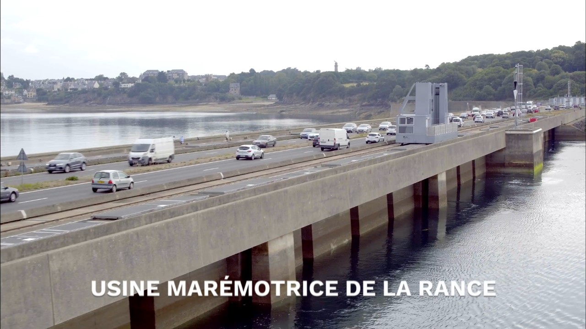

Les énergies marines dépendent des courants et des marées mais également d’autres ressources marines comme par exemple grâce à la chaleur de l’eau ou par la biomasse de matériaux marins comme les algues ou le phytoplancton.
On utilise des usines marémotrices qui utilisent la force du flux et du reflux de la marée pour produire de l’électricité. Son fonctionnement est quasi-similaire à celui d’une centrale hydroélectrique de basse chute mais les usines marémotrices laissent passer l’eau dans les deux sens.
Comment ça marche ?
La marée, en montant puis descendant fait tourner des turbines qui vont faire fonctionner un alternateur qui va produire un courant électrique alternatif. Un transformateur va élever la tension du courant électrique pour qu’il puisse être transporté dans les lignes à haute tension du réseau. En France, l’usine marémotrice de la Rance, entre Saint Malo et Dinard en Bretagne occupe l’estuaire de la Rance sur 700 m. Elle produit chaque année, avec une puissance de 240 MW, 4% de l’électricité consommée en Bretagne à elle seule, soit l’équivalent de la consommation d’une ville comme Rennes qui comptabilisait environ 210 000 habitants en 2014.

Source : EDF
On utilise également des hydroliennes pour capter l’énergie des courants marins, le fonctionnement est à peu près le même que celui d’une éolienne. L’hydrolienne est déposé sur une structure métallique qu’on place au fond de la mer, elle est composée de pales, d’un alternateur et de câbles pour acheminer l’énergie. La force des courants vont actionner les pales qui vont se mettre à tourner et ainsi transmettre l’énergie mécanique qu’elles produisent à un alternateur. L’alternateur va transformer cette énergie en énergie électrique puis l’acheminer grâce à des câbles vers le rivage, en étant élevé à 20 000 V au préalable pour faciliter son transport. Un site de parc hydrolien est en cours de construction, en Bretagne encore une fois, au large de Paimpol et Bréhat, non loin de Saint Brieuc, à 15 km du continent. Cette zone est l’une des zones européennes ayant les courants marins les plus forts avec une vitesse de 3 m/s. Le parc sera composé de plusieurs hydroliennes d’une capacité de 2 à 4 MW et permettra d’alimenter 4 000 foyers. La France présente environ 20% du potentiel hydrolien européen au large de la Bretagne et du Cotentin ce qui pourrait constituer une énorme source d’énergie si ces parcs venaient à se développer.
Quelques données supplémentaires
L’énergie marine est sous-exploitée, en effet, elle ne correspond qu’à 0,5% de la production d’énergies renouvelables française. Elle a permis de produire 0,5 TWh en 2014 et occupe seulement la cinquième place des énergies renouvelables. À terme, on peut croire à une forte progression de cette énergie renouvelable grâce à son fort potentiel en France.